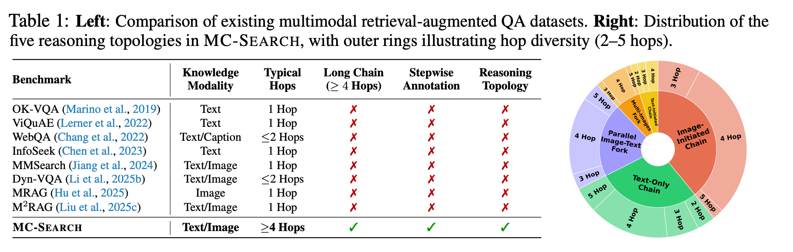
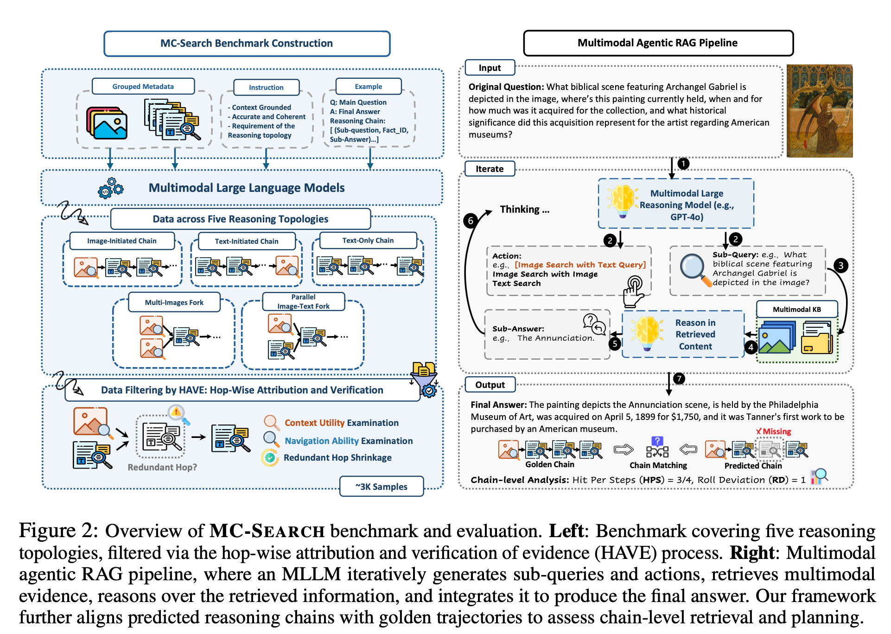

MC-Search is the first comprehensive benchmark designed to evaluate Multimodal Agentic Retrieval-Augmented Generation (MM-RAG). Unlike traditional RAG, MC-Search focuses on structured long reasoning chains where agents must navigate through vast knowledge bases (389K images and 784K documents) to solve complex queries. Each instance provides step-wise sub-questions, explicit retrieval modality annotations (image vs. text), and intermediate reasoning states, enabling fine-grained analysis of how agents plan and execute multimodal search. Our evaluation of state-of-the-art MLLMs reveals critical bottlenecks: retrieval fidelity drops significantly beyond 3-hop reasoning, models struggle with cross-modality consistency, and explicit reasoning alignment via SEARCH-ALIGN substantially boosts retrieval success rates.
We introduce MC-Search as a new benchmark paradigm for multimodal agentic search, requiring agents to reason over both visual and textual evidence through structured, multi-hop chains.
The MC-Search benchmark encompasses a large-scale knowledge base of 389K images and 784K documents. Tasks are constructed around five representative reasoning topologies that mirror real-world agentic search behaviors — sequential, parallel, conditional, iterative, and hybrid chains — enabling systematic evaluation across varying reasoning depths and modality combinations.
We evaluate models not only on final-answer accuracy, but also on Hit-per-Step (HPS) to measure per-hop retrieval precision, Rollout Deviation (RD) to quantify divergence from the gold reasoning path, and Planning Accuracy to assess how well agents decompose queries into sub-questions. These metrics pinpoint exactly where agentic reasoning breaks down across the multi-step pipeline.

The five reasoning topologies of MC-Search, simulating realistic agentic search behaviors via unified pipelines. Each topology captures a distinct pattern of how information must be retrieved and combined across modalities and reasoning steps.

Our evaluation of state-of-the-art MLLMs reveals three critical bottlenecks in current multimodal agentic search capabilities. The most prevalent failure pattern involves compounding retrieval errors across reasoning hops — a single wrong retrieval at step 2 propagates and amplifies failure through all subsequent steps. Cross-domain errors (i.e., failures at modality-switching junctions) account for the majority of task failures, confirming that the critical bottleneck emerges precisely at the intersection where visual and textual retrieval must be coordinated.
💡 Compounding Errors:
Retrieval fidelity drops significantly as reasoning depth exceeds 3 hops.
💡 Modality Gap:
Models struggle with maintaining consistency when switching between image and text retrieval.
💡 Process Supervision:
Explicit reasoning alignment (SEARCH-ALIGN) substantially boosts retrieval success rates
across all topologies and model families.
@inproceedings{
ning2026mcsearch,
title={{MC}-Search: Evaluating and Enhancing Multimodal Agentic Search with Structured Long Reasoning Chains},
author={Xuying Ning and Dongqi Fu and Tianxin Wei and Mengting Ai and Jiaru Zou and Ting-Wei Li and Hanghang Tong and Yada Zhu and Hendrik Hamann and Jingrui He},
booktitle={The Fourteenth International Conference on Learning Representations},
year={2026},
url={https://openreview.net/forum?id=JEGDp1E4OH}
}